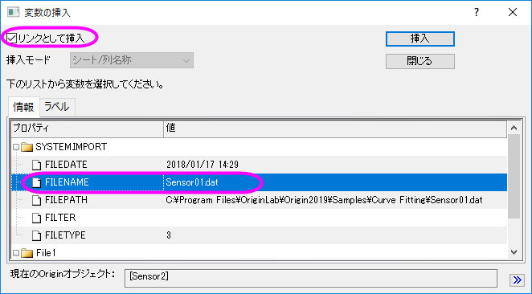
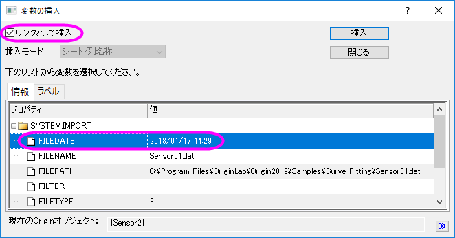
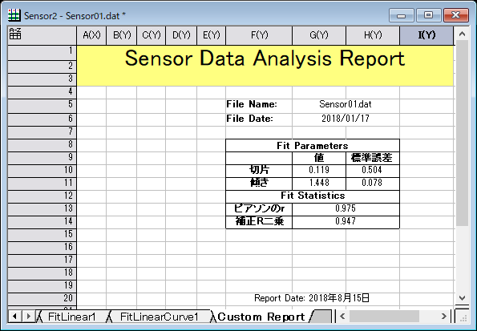
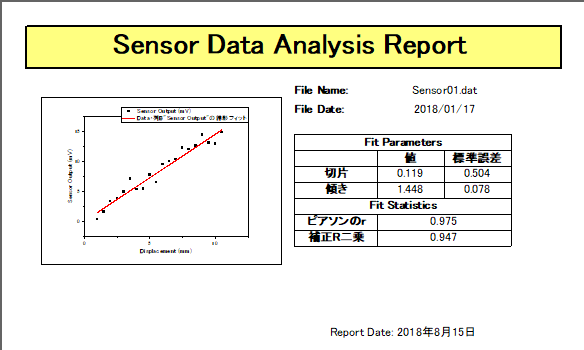

カスタムレポートシートの作成
Create-Custom-Report
概要
Originのワークシートをカスタマイズして、セルを統合したり、グラフや画像のようなオブジェクトを配置したり、変数や他のシートのテーブル/セルへのリンクを埋め込んで、カスタムレポートを作成することができます
このチュートリアルでは、既存の分析テンプレートにカスタムレポートを追加する方法を説明しています。これにより、新しいデータをインポートすれば解析結果が更新さるので、カスタムレポートをエクスポートしたり印刷することができます。
必要なOriginのバージョン:Origin 9.0 SR0以降
学習する項目
- カスタムレポートシートの作成方法
- 分析テンプレート(OGW)の一部としてカスタムレポートを保存して、新しいデータで再利用する方法
ステップ
Note：あらかじめ分析テンプレートの作成と利用というチュートリアルを行い、MySensorData.OGWU を作成する必要があります。
データのインポート
- ファイル：開くメニューからダイアログを開き、ファイルの種類をワークブック（*.ogwu）として、分析テンプレート MySensorData.OGWUを開きます。この分析テンプレートは、最初のシートの列Bに対して線形フィットの分析操作と、入力データとフィット曲線がから作図された埋め込みグラフとともに保存されています（テンプレートにはデータは含まれません）。
- ワークシートDataをアクティブにします。ヘルプ: フォルダを開く: サンプルフォルダを選択して、サンプルフォルダを開きます。このフォルダ内のCurve FittingサブフォルダにあるSensor01.dat ファイルを探します。ワークシートDataにファイルをドラッグアンドドロップしてインポートします。
カスタムレポートシートの作成
- ワークシートDataタブ上で右クリックし、追加を選択して、新しいワークシートを追加します。このワークシートをCustom Reportという名前にします。
- Custom Reportシートをアクティブにし、フォーマット：ワークシートの表示属性（またはF4キーを押す）を選択しダイアログを開きます。サイズタブを開き、サイズの項目の行数を20、と列数を9に設定します。その他タブを開き、行の自動追加にチェックを付けます。OKボタンをクリックしてこのダイアログを閉じます。
- ワークシートで、ロングネーム、単位、コメント、F(x)=のヘッダ行でクリックしてドラッグして、これらの4つの行を選択します。右クリックして開くメニューから、非表示を選択します。これによりワークシートから、これら4行が隠されます。
- 全ての列の最初の3行を選択して、スタイルツールバーにあるセルの統合ボタン
 をクリックします。統合したセルに、Sensor Data Analysis Report と入力します。
をクリックします。統合したセルに、Sensor Data Analysis Report と入力します。
- G、H列の5行目から6行目についても同様に統合します。F列の5行目にFile Name:と入力し、6行目にはFile Date:と入力します。
- G、H行を統合した5行目のセルで右クリックして、コンテキストメニューかあら変数の挿入を選択します。ダイアログが下図のようになっているのを確認して、FILENAME変数を選択して挿入をクリックし、このセルに変数を挿入します。
- 
- 同様に、G、H行を統合した6行目のセルで右クリックして、コンテキストメニューかあら変数の挿入を選択します。ここでは、下図のようにFILEDATE 変数を挿入します。
- 
- 日付データの入力されたセル上で右クリックして、コンテキストメニューからセルのフォーマットを選択します。列のデータ型を日付に変更して、OKボタンをクリックします。
- ワークシートFitLinear1を開き、パラメータ表を表示します。三角形のボタンをクリックして、フライアウトメニューから表のコピーを選択します。
- Custom Report シートを開き、E列の9行目を選択します。そして右クリックして、リンクの貼り付けを選択します。E列に入力されたSensor Outputというテキストは、Deleteキーを使用して削除します。
- G、H列の13行目と14行目を統合します。
- FitLinear1シートを開き、統計表でピアソンのrと補正R二乗の値を選択して右クリックしてコピーを選択します。
- Custom Report シートを開き、統合した13行目を選択します。そして右クリックして、リンクの貼り付けを選択します。2つの統合セルに値が貼り付けられます。これらのセルの一つ左に、ピアソンのrと、補正R二乗と入力します。
- F、G、H列の8行目、12行目、20行目をそれぞれ統合します。統合したそれぞれのセルに、Fit Parameters、Fit Statistics、Report Date: $(@D, D1) と入力します。
- このうち20行目のセルで、右クリックしてデータの書式を設定：リッチテキストを選択します。リッチテキストが有効になると、$(@D,D1) には実際のシステム日付が表示されます。
- CTRLキーを押しながら、数値データが入力されたセルをクリックして選択してから、右クリックしてセルのフォーマットを選択します。桁数指定法のドロップダウンリストから、少数桁数＝を選択して桁数を3に設定します。最後に、OKボタンをクリックします。
- スタイルと書式ツールバーにあるボタンを使用して、下図のようにセルの境界線、フォントサイズやスタイル、色などを変更します。必要に応じて、手動で列幅などの調節を行います。
- 
- FitLinear1シートを開き、フィット曲線のプロットのグラフをダブルクリックして埋め込まれたグラフを開きます。グラフのタイトルバーで右クリックし、コンテキストメニューから、ウィンドウの複製作成を選択し、グラフを複製します（Graph1）。複製したグラフの軸をダブルクリックして、軸ダイアログボックスを開きます。X 軸とY軸(垂直と水平)、その両方でスケールタブにある再スケール項目を自動に変更します。それから埋め込みグラフを閉じます。
- ワークシートCustom Report に戻り、ワークシート内の灰色の領域で右クリックして開くコンテキストメニューから、グラフを追加を選択します。開いたグラフブラウザで、埋め込みグラフを複製して作成したGraph1を選択します。OKボタンをクリックし、このグラフをフローティンググラフとしてワークシートに追加します。
- このフローティンググラフは、クリックして表示されるアンカーポイントを使用して位置や大きさを変更できます。
- フォーマット：ワークシートの表示属性を選ぶか、F4キーを押して、ワークシートプロパティダイアログを開きます。表示タブで、グリッド線を表示の項目を開き、列グリッドと行グリッドのチェックを外します。列のデータ型タブを開き、適用先をデータにし、欠損値を空白として表示するにチェックを付けて、「--」で表示されている欠損値が空欄になるようにします。OKボタンをクリックして、ダイアログボックスを閉じます。
- ファイルメニューの印刷プレビューを選択してカスタムレポートをプレビューすると、下図のようになります。
- 
 | Origin 2018bから、選択された範囲内のすべての統合されたセル（統合されたセルの非連続ブロックを含む）は、スタイルツールバーのセルの統合ボタンをクリックすると統合を解除できます。
|
分析テンプレートを保存する
- ワークブックをアクティブにして、ファイルメニューからワークシートを分析テンプレートとして保存をクリックします。
- ファイルパスを指定して、ファイル名としてSensorDataReport を付け、保存ボタンをクリックします。
- 分析テンプレートとして保存されたSensorDataReport.OGWU は、似通ったデータに対して同じ分析を実行する際に使用可能です。
分析テンプレートの再利用
- 新しいプロジェクトを開き、メニューからファイル：最近使ったブックを選択します。先ほど保存したSensorDataReport.OGW を選択して開きます。
- ワークシートDataをアクティブにし、ヘルプ: フォルダを開く: サンプルフォルダを選択して、サンプルフォルダを開きます。このフォルダ内のCurve FittingサブフォルダにあるSensor02.dat ファイルを探します。ワークシート「Data」にファイルをドラッグアンドドロップしてインポートします。
- 新しくインポートされたデータを使用した線形フィット結果や、カスタムレポートが出力されます。